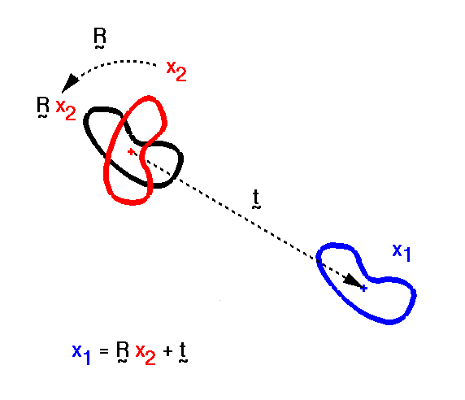
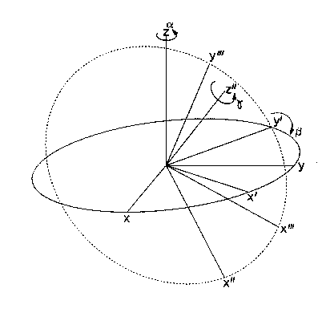
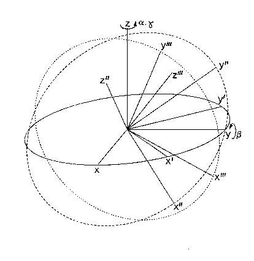
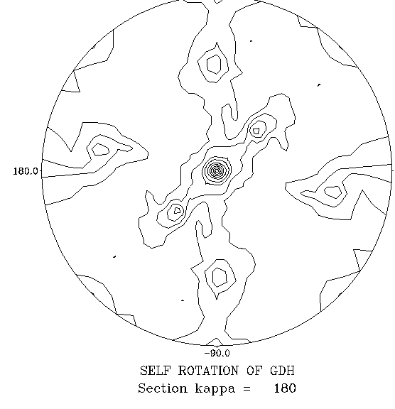

|
CCP4i: Graphical User Interface |
| MR Tutorial Bath - Basic concepts |
 |
BACK TO INDEX |  |
Similar molecules can form crystals with the same or with very different packing arrangements of the molecules within the unit cell. These differences arise even for molecules with identical shapes because the packing is determined not only by shape but by intermolecular interactions (charge, H-bond, hydrophobic effect) at the molecular surfaces. An additional complication arises when several molecular species co-crystallise. In practice 4 cases can be distinguished; in each case "molecular complex" may be substituted for "molecule":
Similar molecules crystallise with essentially identical packing arrangements (isomorphism).
The same or similar molecules crystallise with significant differences in their relative positions (usually apparent from differences in the cell constants), while maintaining their symmetry relationships (i.e. the crystals are non-isomorphous).
The same molecule forms two or more crystals with differing packing arrangements (polymorphism), under the same or different crystallisation conditions.
Similar molecules crystallise with different packing arrangements.
Knowledge of the molecular structure of one crystal can be used to derive the structure of the same or similar molecule in another ("target") crystal. If the crystals are isomorphous this can be done by fitting the known molecule directly into the target crystal; otherwise the technique of Molecular Replacement is used to conduct a search for the fit of the known molecule into the target crystal by comparing their X-ray diffraction patterns.
Observed amplitudes for the X-ray diffraction of the target crystal, but no phases with which to compute the electron density.
It is very important that the observed data is as complete as possible within the high resolution cutoff, i.e. minimal systematically missing regions (low resolution, cusp, zero layers etc.) and detector overloads. There is considerable evidence that data incompleteness can have a disastrous effect on the solution of the structure by Molecular Replacement, though there are things that can be done to alleviate the effect.
Atomic coordinates for 1 molecule of the homologous model structure; for a protein at least 20% sequence similarity is usually needed, but the higher the better. Actually, what is really needed is structural similarity, but of course this usually goes with sequence similarity.
The model should preferably be a crystal structure refined by structure factor least squares, and with individual isotropic thermal parameters. Experience suggests that a lower degree of structural similarity can be tolerated provided the model is an accurate crystal structure, though it is not obvious why this should be so.
Don't forget to delete H2O and other solvent molecules from the model coordinates, and also any obvious dissimilarities in the main-chain such as identified extra loops, but trimming differing side-chains does not usually make much difference.
Unless the space group happens to be P1 (no rotational symmetry, lattice repeats only), the target crystal will contain several molecules in different orientations related by crystallographic (or space group) symmetry, i.e. exact, and relating any pair of molecules anywhere in the crystal. The space group is normally determined uniquely by the symmetry of the observed diffraction pattern and from the systematic absences at the time that the raw intensity data is processed. However in some cases the systematic absences may not provide unique information, and so there may be an ambiguity in the translation components of the space group which can only be resolved by trial-and-error.
In addition, some crystals contain two or molecules ("protomers") related by non-crystallographic symmetry (NCS), i.e. not exact and local, relating only specific pairs of protomers within the same oligomer. This is usually apparent from a solvent-content calculation, and also often, but not always, from pseudo-symmetry and/or lines of enhanced intensity ("spikes") in the observed diffraction pattern.
A basic understanding of the workings of the Molecular Replacement (MR) method can be gained by thinking about the Patterson functions of the model and target structures. It should be understood however that in practice most MR programs do not actually work with the Patterson functions directly, but do most of the work in reciprocal space with structure factors, transforming into real space only at the end of the calculation. The detailed theory behind these calculations is beyond the scope of these notes; numerous original papers and reviews on the subject are available (see section 6: Bibliography).
From the observed amplitudes only (i.e. no phases are used), we can calculate the Patterson function of the target crystal; this consists of peaks at positions corresponding to the complete vector set of the crystal structure.
| The target crystal will in many cases have a different space group from the crystal of the model structure, or may crystallise in the same space group, but non-isomorphously, perhaps due to large-scale relative motion of the molecules in one crystal compared with the other. Each independent molecule in the asymmetric unit will therefore generally be in a different orientation and position, usually represented respectively by 3 rotation angles about the coordinate axes and by 3 translation coordinates. This gives altogether 6N parameters, where N is the number of molecules per asymmetric unit. Of course in the absence of NCS there will be just 6 parameters because then N = 1. |
|  |
| For an animation of this picture (i.e. the molecular replacement 'process'), see MR: Molecular Replacement Using Known Structures at Birkbeck. |
If we knew all the 6N orientational and positional parameters, we could make a complete model of the crystal from the model of one molecule, then calculate the structure factor amplitudes from the coordinates and thermal parameters, and hence calculate a Patterson function Pcalc derived solely from the model. This could be compared with the observed Patterson function Pobs; the simplest (though not necessarily the best!) way of doing this is with the product function:
S(w,t) = Si Pobs(ui).Pcalc(ui,w,t)
Here, Pobs and Pcalc both vary with the vector ui. Pcalc also depends on the set of orientational parameters w and positional parameters t. The product function will sum to a large value provided the peaks in Pobs occur at the same position as the peaks in Pcalc.
An obvious approach to the problem of determining the unknown orientational and positional parameters is simply to try all possible combinations of w and t, and see which combination gives the maximum value for the product function. For N = 1, this involves a search in 6 dimensions, and therefore the number of combinations to be tried goes up as the 6th power of the number of trial values for each parameter. There must be enough trial values that the separation between adjacent sample points is not so big that the maximum is missed completely. Unfortunately, Patterson searches in 6 dimensions or higher are extremely time-consuming and generally impractical. For N = 2, a 12 dimensional search would appear to be required, and this is certainly out of the question. The strategy has to be to find ways to decompose all these multi-dimensional searches into series of 3-D searches.
The vector set of the complete structure can be thought of as containing both intra- and inter-molecular vectors. Although there is no way to distinguish these without knowing the structure, and there is certainly never a clear-cut separation of the two types of vector, the former tend to be shorter (nearer to the origin of the Patterson function); this simple fact is of crucial practical importance.
The intra-molecular vector set depends only on the orientational parameters, and not on the positional ones, whereas the inter-molecular vector set depends on both. It is possible to use the differing length distributions to discriminate between intra- and inter-molecular vectors in Pobs by including in the summation only those inside an envelope, usually spherical with a fixed radius, centred on the Patterson origin. The aim is to choose this radius of integration to be large enough that sufficient intra-molecular vector peaks are included, while not including too many inter-molecular vector peaks. What in practice constitutes "sufficient" and "too many" is discussed below.
As an approximation therefore, the product function can be separated into two components: a Rotation function (RF): R(w), and a Translation function (TF): T(w,t), each now with 3N variable parameters. Note that this Rotation function is also known as the cross-Rotation function to distinguish it from the self-Rotation function, to be discussed below.
R(w) = SiÎintra Pobs(ui).Pcalc(ui,w)
T(w,t) = SiÎinter Pobs(ui).Pcalc(ui,w,t)
In the TF, Pobs has to be modified so that it contains only the inter-molecular vectors; this is done by putting Pobs and Pcalc on the correct relative scale, and then subtracting the intra-molecular component of Pcalc from Pobs. The orientational parameters w are assumed to be kept fixed, at the optimum values determined by the RF, during the TF search.
The functions described above are the full-symmetry RF and TF, because Pcalc contains contributions from all molecules related by space group symmetry (and by NCS if present); of course Pobs does as well, but that is unavoidable. The intra-molecular component of Pcalc is simply the superposition of all the individual molecular Pattersons, which are related to each other by the crystallographic and non-crystallographic point groups (i.e. the purely rotational components of the symmetry elements).
In practice most MR programs do not compute the full-symmetry RF, mainly because of computational complications, though it should give better results. Instead, an individual molecule of the model is placed in a hypothetical crystal without rotational symmetry (i.e. in space group P1), and amplitudes calculated from this are used. This should still produce maxima in the product function wherever the set of peaks in the calculated molecular Patterson coincides with a subset of the peaks in Pobs, though false maxima may arise from accidental superpositions with peaks belonging the other symmetry related subsets in Pobs.
The inter-molecular vector set consists of contributions from all pairs of molecules, whether related by space-group symmetry or by NCS. In contrast with the RF, the full-symmetry TF above (also known as T2) is the one that is most often used in practice, at least by the newer MR programs. Some older programs still use the T1 function, which derives from using the subset of inter-molecular vectors from only 1 pair of molecules, but this does not generally give as good results as the full-symmetry T2 function, because again false maxima may arise from accidental superpositions with peaks belonging to the other inter-molecular vector subsets in Pobs.
The set of orientational parameters w consists of 3 variables for each independent molecule. These 3 variables could be defined in a number of different ways, but they are usually defined as Eulerian angles: either the Crowther convention (a, b, g) which is used consistently throughout the CCP4 and MERLOT program suites, or the Rossmann & Blow convention (q1, q2, q3), or the X-PLOR convention (q1', q2', q3').
They are usually described as operating on the coordinates, in the order as written, about the axes after rotation, e.g. a about the z axis, then b about the new y, then g about the new z (note that these axes are not necessarily the same as the crystallographic axes). However, it is probably conceptually simpler to regard them as operating on the coordinates in reverse order about the fixed axes, i.e. g about the z axis, then b about the old y, then a about the old z. Both of these descriptions correspond to the equation:
rnew = Rz(a) . Ry(b) . Rz(g) . rold
Note that although the a rotation is written first, this is read as meaning that the g rotation is applied to the coordinate vector rold first.
| Rotating axes | Fixed axes |
|---|---|
| (for better resolution, click on the picture) | (for better resolution, click on the picture) |
|  |  |
| 1. a about z | 1. g about z |
| 2. b about new y | 2. b about old y |
| 3. g about new z | 3. a about old z |
The Eulerian angles (q1, q2, q3), as originally defined by Rossmann & Blow, behave in the same way as (a, b, g), except that the second rotation axis is x instead of y.
Note: q1 = a + 90°, q2 = b, q3 = g - 90°
Beware that the X-PLOR program employs the transpose of the R&B convention; this is pertinent if you wish to compare the results of X-PLOR with other RF programs. The X-PLOR Eulerian angles are related to the Crowther ones by:
q1' = 270° - g, q2' = b, q3' = 90° - a
In all cases the angles increase anticlockwise looking towards the origin from the positive end of the axis.
The asymmetric unit of the RF is 1/M of a complete revolution in a or q1 (R&B) or q3' (X-PLOR), where M is the order of the crystallographic symmetry axis parallel to z in the orthogonalised frame of the target crystal. Unless the model structure has symmetry about its z axis, the asymmetric unit is a complete revolution in g or q3 or q1'. In b or q2 it is ½ a complete revolution, unless the target crystal has at least one 2-fold axis perpendicular to z, when it is ¼. The AMORE / ROTFUN program automatically detects symmetry in a, but needs to be given the asymmetric unit in b.
The choice of the radius of integration in the RF can be critical in determining success or failure but there is no consensus on how to make the choice. Usually it is a matter of trial-and-error, as it is with the other parameters, such as resolution cutoffs. The size of the P1 unit cell in which the model is placed, which is obviously related to the radius, is not so critical.
Bear in mind that a spherical molecule of diameter D will give an intra-molecular vector set in the Patterson bounded by a sphere of radius D, so nothing will be achieved by having the radius of integration larger than D. However a radius as large as D will certainly span the interstices between molecules and include many unwanted inter-molecular vectors in Pobs. Also in no circumstances must the radius be as large as the smallest primitive cell dimension of the target crystal, otherwise the resulting inclusion of the large Patterson origin peak will cause problems.
David Blow (in the 1985 Molecular Replacement Daresbury Study Weekend Proceedings, p.5) suggests a value for the radius "for an approximately spherical molecule ... 75-80% of the diameter". The most common choice seems to be about half the diameter, or for an ellipsoidal molecule the geometric mean of the ellipsoid semi-axes, which is roughly half the average diameter. However my experience is that this is too small; it only encloses 1/8 of all possible intra-molecular vectors, producing excessive "noise" in the RF. My own preference is for a hybrid of the above options, namely 75% of the minimum diameter. Having decided, the choice of the size of the unit cell is relatively straightforward: it must be at least the size of the box bounding the model plus the chosen radius in each direction; then all the inter-molecular vectors in Pcalc will necessarily be longer than the radius and will be excluded. However it must not be over-sized otherwise too many structure factors may be calculated.
Frequently no information on the nature of any non-crystallographic symmetry will be available initially, though there may be indications from the diffraction pattern. Also in special cases where a crystallographic and a non-crystallographic screw or rotation axis happen to be parallel, the native Patterson function will have distinctive features, so it is always worth computing this if NCS is suspected. In the presence of NCS the difficulties of solution are multiplied several-fold, and the best advice is probably to find a different crystal form!
In principle, the point group of the NCS can be deduced from the self-rotation function, obtained by rotating Pobs against itself. 2-fold NCS is by far the most common, so normally the sections of the self-RF are plotted in terms of spherical polar angles (see next section); this allows the information on all 2-fold axes (crystallographic as well as non-crystallographic) to be viewed simultaneously. Similarly all 3-fold axes can be viewed together, and so on. NCS point group 222 (3 mutually perpendicular 2-fold axes) is quite common, so one might look for right angles between pairs of peaks on the 2-fold section of the self-RF. Angles can be measured directly from the plot by using a stereographic net.
If the self-RF can be partially or completely interpreted, a locked Rotation function may give the best results. This is simply a cross-RF using the partial or full NCS point group symmetry, with some or all of the protomers in the correct orientation relative to each other.
Unfortunately the self-RF can be very difficult to interpret, and is often only used to confirm the conclusions drawn from the cross-RF. Any pair of correctly interpreted peaks in the cross-RF arising from molecules related by NCS should correspond to a peak in the self-RF; working out the correspondence is a matter of simple matrix arithmetic (alternatively program RFCORR in CCP4 can be used to search for the correspondences).
The main difficulty with the cross-RF in the presence of NCS arises when one lacks complete information on the NCS point group, and consequently there is no option but to search for individual protomers. The intra-molecular vector set is a superposition of the individual molecular vector sets and cannot be separated into its components, so 3-D searches for the orientations of each protomer have to be conducted in the presence of the intra-molecular vector sets from the other protomers. The cross-RF is then likely to be very noisy and may be hard to interpret.
The 3 orientational parameters normally used in the self-RF differ from those in the cross-RF. Instead of 3 Eulerian rotations about the coordinate axes, there is a single rotation k about an axis whose direction is defined by the spherical polar angles (w,f). Note that w is sometimes called q, and k is sometimes called c in the programs.
The sections of constant k in the self-RF are normally plotted in stereographic projection. Here, the point w = 0° at the north pole of an imaginary globe projects onto the centre of the circular plot; while points on the equator with w = 90° project onto the circumference. The asymmetric unit of the self-RF is always contained in one hemisphere, so points outside the range w = 0-90° need not be plotted. Points with f = 0° project onto the +x axis (meridian) of the plot and f increases anti-clockwise.
A stereographic net (produced by, for example, program STNET in CCP4) is used to measure angles between points on a stereographic projection plot. The net used must have exactly the same diameter as the plot, otherwise the results will not be accurate. The angle must be measured along any one of the great circles (projected lines of longitude connecting opposite poles). The other set of lines (projected lines of latitude parallel to the equator) sub-divide the great circles and are calibrated in degrees to allow the angle to be read off.
| Here is a self-RF (NCS symmetry = 222) to practice on. |
|  |
You should be able to find 2 sets of 3 peaks; the sets are related to each other by a crystallographic 2-fold axis, and each set corresponds to the 3 NCS 2-fold axes in a 222 tetramer. Using the stereographic net, you should therefore be able to measure 90° angles between all pairs of peaks within the set of 3.
Assuming that the RF can be correctly interpreted, the solution of the TF in the presence of NCS is likely to prove an even tougher nut to crack. This is because there is likely to be no prior information at all on the positioning of the protomers within the oligomer, except in very special high symmetry cases such as virus structures.
The strictly full-symmetry TF (crystallographic + NCS) is therefore generally not feasible, so a TF for each protomer independently has to be done first, ignoring the others and using only crystallographic inter-molecular vectors. However this procedure tends to give high background noise arising from interference from inter-molecular vector sets between the other NCS-related pairs; in any case it does not usually produce a unique solution because most space groups have alternative origins, and so there is no guarantee that each protomer will be defined relative to the same origin.
Once one protomer (e.g. "A") is located, then a TF for the next ("B") can be done, using inter-molecular vectors between all B's, plus those between all A's and all B's. Then "C" can be searched for, using all inter-molecular C-C, A-C and B-C vectors, and so on. This procedure ensures that the origins are uniquely defined. Of course the labels are completely arbitrary, so it doesn't matter in which order the protomers are searched for.
The TFFC program computes the NCS T2 function by splitting it into 2 components: the "crystallographic" TF which uses only inter-molecular vectors of the type A-A, and the "non-crystallographic" (or "partial") TF which uses only inter-molecular vectors of the type A-B. The AMORE / TRAFUN program is more convenient in that it combines these into one operation. However the price of this is that much more memory is needed.
It is worthwhile noting that this procedure is exactly analogous to that for finding heavy atoms in an isomorphous difference Patterson: for "protomer positional coordinates" read "heavy-atom site coordinates", for "crystallographic TF" read "Harker vector", and for "non-crystallographic TF" read "cross vector" - then the procedure is identical!
For example, in space group P21 with 2 asymmetric units (labelled "1" and "2") per unit cell, and 4 independent molecules (labelled "A", "B", "C", "D") per asymmetric unit, the intra- and inter-molecular vector sets can be characterised as follows:
| A1 | A2 | B1 | B2 | C1 | C2 | D1 | D2 | |
|---|---|---|---|---|---|---|---|---|
| A1 | S | C | N | N | N | N | N | N |
| B1 | N | N | S | C | N | N | N | N |
| C1 | N | N | N | N | S | C | N | N |
| D1 | N | N | N | N | N | N | S | C |
S = Intra-molecular vector set used in RF and subtracted in TF.
C = Inter-molecular vector set used in crystallographic TF.
N = Inter-molecular vector set used in non-crystallographic TF.
Note that there are many more N vectors than C vectors, so the TF using NCS is likely to be less noisy and more reliable.
The crystallographic component of the TF has the following asymmetric unit, depending on the point group:
| crystal system | point group | asymmetric unit |
|---|---|---|
| Monoclinic | 2 | y=0 section; ½ of x and z (for b unique). |
| Orthorhombic | 222 | ½ of x, y and z. |
| Trigonal | 3 | z=0 section; all x and y (3 asymmetric units). |
| 312 | All x and y; ½ of z (3 asymmetric units). | |
| 321 | All x and y; ½ of z. | |
| Tetragonal | 4 | z=0 section; ½ of x, all y (or all x, ½ of y). |
| 422 | x and y as previous, ½ of z. | |
| Hexagonal | 6 | z=0 section; all x and y. |
| 622 | All x and y, ½ of z. | |
| Cubic | 23 | ½ of one of x, y or z; all of the other two. |
| 432 | Same as previous. |
Except: Space group F222 is ¼ of one of x, y or z; ½ of the other two.
Space group F23 is ¼ of one of x, y or z; all of the other two.
The space group of the TF is called the Cheshire group; it represents the symmetry remaining when the material contents of the crystal are hypothetically removed, leaving just the crystal lattice and its symmetry elements; in other words, just the smile after the rest of the Cheshire cat has disappeared! (Charles Lutwidge Dodgson, alias Lewis Carroll, was of course born in a certain village in the county of Cheshire well-known to crystallographers, namely Daresbury.)
The non-crystallographic TF has the following asymmetric unit, depending on the lattice type:
| lattice type | asymmetric unit |
|---|---|
| P | All x, y and z. |
| R | All x, y and z (3 asymmetric units). |
| C | ½ of x, all y and z (or ½ of y, all x and z). |
| I | ½ of one of x, y or z; all of the other two. |
| F | ½ of x, y and z. |
The correct asymmetric unit of the TF is automatically selected by AMORE / TRAFUN, but with TFFC the appropriate LIMITS should be specified in FFT; note that it doesn't matter if the chosen asymmetric unit is too big; the peak list will just contain solutions translated by the allowed origin shifts of the space group.
|
BACK TO INDEX | |
{kind=link}
{kind=link}
{kind=link}
{kind=link}
{kind=link}
{kind=link}
{kind=link}
{kind=link}
{kind=link}
{kind=link}
{kind=link}
{kind=link}
{kind=link}